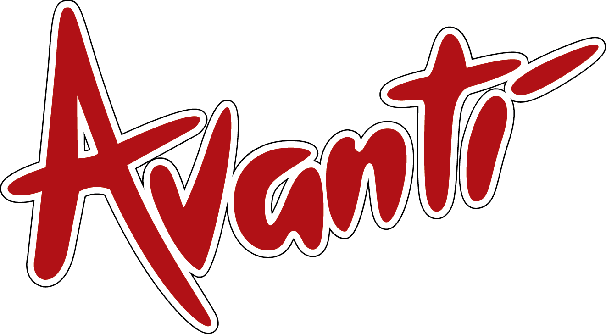
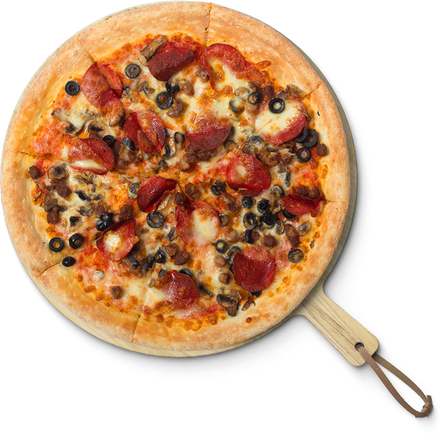
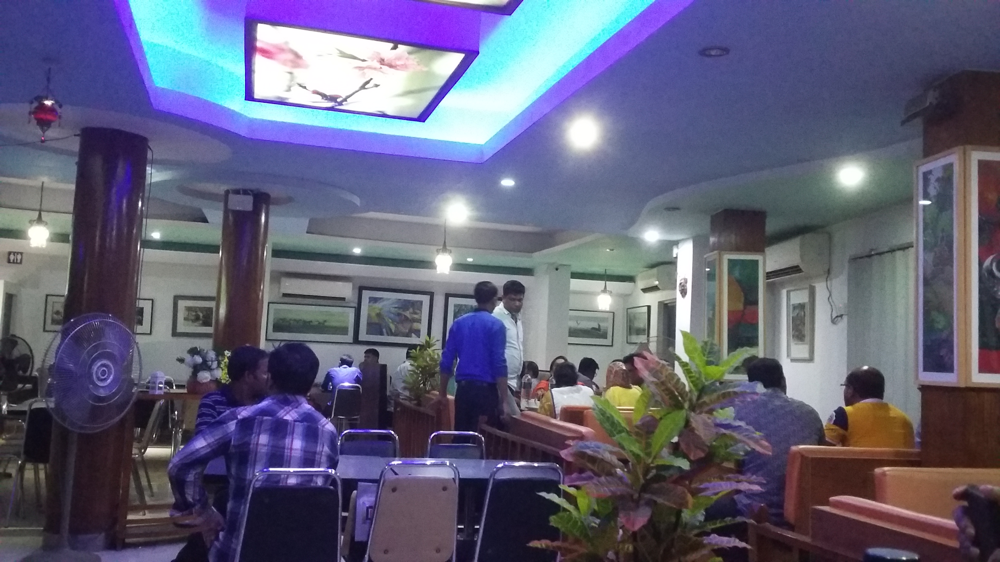
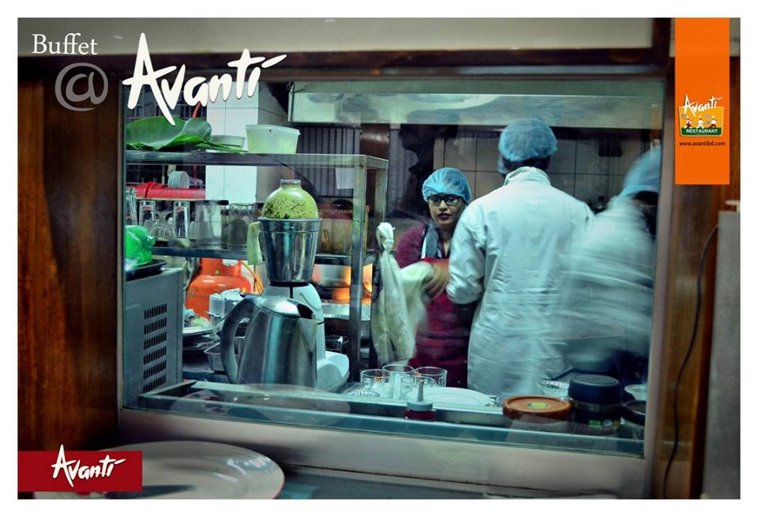

Avanti Restaurant × VibeflowNEW PEOPLEHelp new customers discover Avanti before they know the name OLD CUSTOMERSBring previous customers back without paying for them twice BETTER MARGINMove more orders toward direct channels over 90 days
Restaurant Automation & Sales Growth Masterplan
This is Vibeflow’s 90-day proposal for Avanti Restaurant in Mymensingh. Our goal is to reduce hidden leakage, grow direct customer demand, and turn Avanti’s digital presence into a working order and sales system.
We are proposing a practical working plan that helps Avanti reach new customers, bring previous customers back, and protect margin.
Through food-first search pages, local proof, and a faster first reply.
With saved numbers, reminder messages, and celebration offers.
Reduce third-party leakage gradually instead of all at once.


01 / Why this proposal exists now
Current situation: Avanti already has demand, but value is leaking from the system.
The current site proves the brand exists, but it does not behave like a sales engine. Search visibility is weak, response flow is manual, repeat-customer memory is not systemized, and third-party channels can still eat margin.
- The public website still carries generic titles, weak search structure, and unfinished gallery naming such as test 1–6.
- The current operating reality suggests that demand already exists, but margin can thin quickly when leakage is not controlled.
- This is not a future-only idea. Avanti already has enough customer flow to benefit from customer follow-up, special-occasion offers, direct ordering, and faster reply today.
Customer interest already exists in the market
There is room to shift more orders into owned channels
Public-page trust signal already exists
Existing demand is real, not hypothetical
Board-stated leakage band
Where value is currently slipping
Discovery is weak
Hungry customers search by food and location, not only by brand name. Avanti needs search-ready food pages and local proof signals.
Response is inconsistent
During peak hour or late at night, even a 5-minute delay can push a customer to another restaurant. Fast reply is sales protection.
Repeat demand is not owned
Without a structured customer database, birthdays, reactivation, and targeted offers remain manual and inconsistent.
Margin is exposed
When delivery depends too heavily on third-party platforms, Avanti wins the order but loses too much of the profit.
Why this plan fits now
Why this plan fits Avanti
Avanti already has food appeal, customer interest, and local recognition. The job of this plan is to organize those strengths so they create more new orders, bring previous customers back, and move more demand into owned channels.
LOCAL BUYING PATH
Mymensingh customer journey in plain language
In Mymensingh, many orders start from a Google search, a Facebook post, a tagged photo, or a shared WhatsApp link. People want to scan the menu quickly, message fast, and come back for family meals, office treats, and birthday moments. This plan is built around how local customers actually discover, compare, and order food.
02 / The 90-day system
What will stand up in the first 90 days
In the first 90 days, this package does four jobs at the same time: it presents Avanti to new customers, brings previous customers back, helps the team reply faster, and moves more orders toward direct margin.
New people
Get discovered by people who are searching for pizza, buffet, family dining, and quick delivery nearby.
Old customers
Use saved customer details to bring back people who already liked Avanti once.
High-value moments
Give office orders, birthdays, and family celebrations more personal follow-up.
Direct margin
Make the direct path easier so each good order keeps more profit inside Avanti.
Fix the public surface
Turn Avanti’s digital presence into a conversion-ready structure with search-safe pages, direct-order prompts, and owner-readable trust blocks.
Capture customer memory
Collect customer names, numbers, repeat-order intent, and celebration dates so Avanti can reactivate demand without depending on ad spend every time.
Reply faster than competitors
Deploy AI-assisted inbox handling and lead forwarding so missed Facebook, website, and WhatsApp inquiries become follow-up opportunities instead of lost orders.
Shift orders toward direct margin
Make the direct order path simpler, clearer, and more desirable so Avanti slowly reduces dependence on high-commission channels.
In the first 90 days
What will stand up
- A direct-order-ready web/app surface
- A customer capture and follow-up system
- An AI inbox, faster replies, and lead-forwarding workflow
- Campaign structure for offers, VIP care, and special moments
- Clear reporting, priorities, and rollout direction for management

03 / Revenue workflows inside the system
How the system brings new orders, repeat orders, special moments, and better margin
These are weekly operating loops, not hidden tricks. Each one shows the working cost, likely reply pattern, likely conversion pattern, and why it matters for Avanti. Numbers are planning ranges, not promises.
Local discovery engine
Food-specific pages, schema, Google Business Profile alignment, and local search landing pages for pizza, set menu, buffet, and family dining intent.
- Cost
- Indicative monthly budget: ~৳18k / month
- Lead reply
- 8–15% high-intent click / chat response band
- Conversion
- 25–55 new first orders / month
Direct-order web app surface
A fast mobile-first order path with installable shortcut behavior, menu highlights, and call/WhatsApp fallback for low-friction orders.
- Cost
- Build value inside 90-day package
- Lead reply
- Immediate CTA exposure
- Conversion
- 8–14% better order completion vs weak brochure flow
WhatsApp + SMS reactivation
Offer pushes, reminder campaigns, soft educational messages, and event-triggered follow-up using captured customer data.
- Cost
- SMS ~৳0.50 per message; WhatsApp ops ~৳2k / month
- Lead reply
- SMS 4–8%; WhatsApp 12–20%
- Conversion
- SMS 1.5–3.0% of list; WhatsApp 3–6% of targeted list
VIP celebration loop
Birthday, office, and family celebration outreach with surprise moments, tagged content, and higher-value customer care.
- Cost
- Indicative VIP program budget: ~৳6k / month
- Lead reply
- 15–25% warm response band
- Conversion
- 10–20 higher-value event / family orders per month
AI inbox + lead forwarding
A multilingual assistant for website, WhatsApp, and Facebook touchpoints that captures intent, extracts phone numbers, and forwards hot leads instantly.
- Cost
- Indicative 90-day ops budget: ৳20k–40k
- Lead reply
- Near-instant first response
- Conversion
- 18–30% recovery of otherwise-missed inquiries
Delivery margin recovery
Own-order routing, rider or partner dispatch logic, and direct-order incentives that gradually shift orders away from high-commission platforms.
- Cost
- 25% marketplace commission vs ~8% own-fulfillment cost model
- Lead reply
- N/A margin lever
- Conversion
- Example: 200 orders / month direct shift
04 / Commercial model and projections
Working commercial model for the first 90 days
The scenario model below starts from Avanti's current demand pattern and applies a staged ramp. It assumes the system does not produce full results on day one. Month one builds the base; month two compounds; month three should show the clearest lift.
Assumptions
Planning assumptions behind the 90-day model
Customer demand baselineEstablished
Order consistencyActive weekly demand
Offer structureSuitable for direct-order upsell
Customer flowEnough to support CRM and reactivation
Marketplace model25% marketplace commission vs ~8% own-fulfillment cost
Activation budget~৳35k–60k across 90 days
90-day service fee৳95,000
VIP surprise fundOptional support fund: ~৳10k–20k

How to read the numbers
Scenario view
The model uses a cautious ramp because real systems need setup time. The lift gets clearer when discovery, faster reply, customer follow-up, and direct ordering start working together.
- Measured improvement in direct orders and repeat demand
- Best for cautious rollout and early validation
- Conservative scenario
- Stronger lift from discovery, response, and follow-up working together
- Best fit for a realistic 90-day operating push
- Base-case scenario
- Highest lift when the team actively uses CRM, campaigns, and direct-order routing
- Best fit for a high-adoption scenario
- High-adoption scenario
This commercial model is built around a 90-day implementation fee of ৳95,000, a recommended activation budget of ~৳35k–60k, and an optional VIP surprise fund of ~৳10k–20k. These figures are planning estimates, not guaranteed financial outcomes.
05 / Execution and print readiness
How the 90-day rollout will work
Avanti can review this plan digitally, discuss it in Bangla or English, and print it cleanly for offline decision-making.
Audit, copy lock, and offer mapping
Confirm business priorities, offer structure, direct-order flow, local SEO scope, and customer data capture logic.
Build public surface + CRM foundations
Ship conversion-oriented pages, event hooks, WhatsApp/SMS capture blocks, and owner-readable reporting modules.
Automate response and retargeting
Deploy AI inbox handling, lead routing, reactivation campaigns, and follow-up scripts for warm audiences.
Tighten margin and scale repeat demand
Shift repeat orders toward direct channels, tune VIP loops, and convert the best-performing flows into repeatable operating playbooks.
Print-ready setup
Print-ready A4 sharing layout
- Each major section is placed inside an A4-oriented sheet container with deliberate page breaks.
- Language toggle and action controls disappear in print so the hard copy looks clean.
- Large tables collapse into print-safe blocks instead of unpredictable overflow.
- Dark-screen styling becomes light, high-contrast print styling automatically.
Image handling
How Avanti visuals will support the proposal
- This presentation uses Avanti's current public brand and food photography to show the direction clearly and help Avanti judge the final look with confidence.
- The structure makes it easy to replace any image later with final campaign photography or menu visuals.
- The same direction can continue into Avanti’s landing pages, campaign assets, and future sales materials without changing the core story.
06 / Close
What Avanti is really buying
This is not just a presentation. It is not only a website project. Avanti is buying a sales workflow: discovery, response, reactivation, VIP care, and margin protection inside one coordinated 90-day operating system.
Next step
Recommended next steps
- Approve the story direction and language framing.
- Confirm the 90-day package scope and priority workflows.
- Lock the direct-order UX, customer data fields, and campaign approval rules.
- Replace any placeholder images if Avanti wants final presentation polish before sending.
Ready to review on screen, print on paper, and send as Avanti's 90-day proposal.